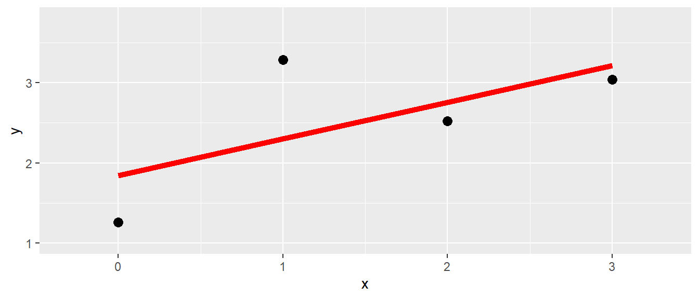
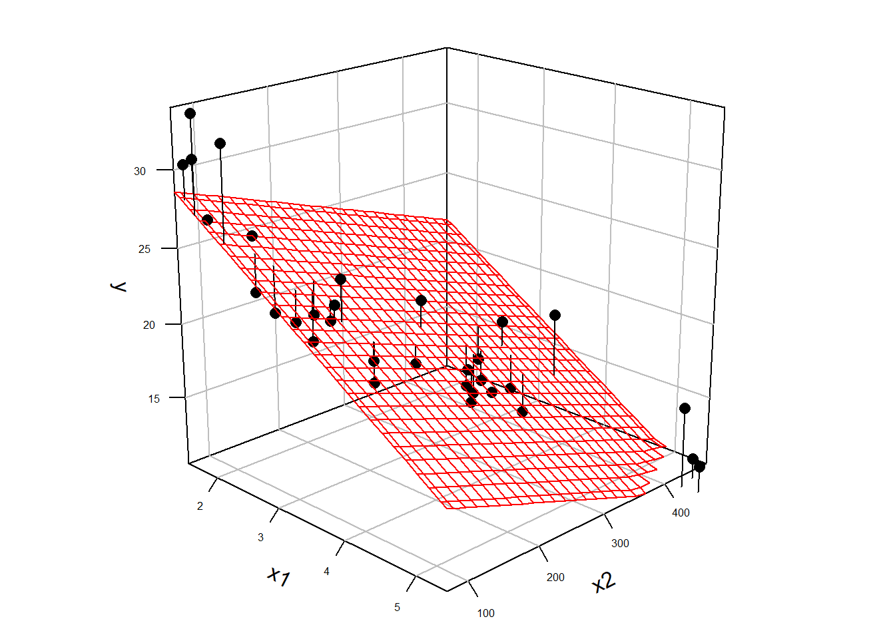

| Velocity[m/s] | body mass[kg] | arm span[cm] |
|---|---|---|
| 15.8 | 70.7 | 189.2 |
| 17.2 | 63.7 | 182.0 |
| 18.3 | 76.2 | 192.1 |
| 18.4 | 64.9 | 171.1 |
| 18.4 | 63.0 | 181.1 |
9 Einführung
In vielen Fällen in der Praxis liegt selten der einfache Fall vor, dass eine abhängige Variable mitels nur einer einzigen Variable erklärt bzw. vorhergesagt werden soll. Sondern meisten sind mehrere Variablen an dem Prozess der modelliert werden soll beteiligt. Ein einfaches Beispiel aus der Literatur ist der Zusammenhang zwischen der Wurfgeschwindigkeit beim Handball in Abhängigkeit vom Körpergewicht und der Armspannweite. In Tabelle 9.1 ist ein Ausschnitt aus einem möglichen Datensatz abgebildet.
Im Prinzip könnte der isolierte Einfluss der beiden Prädiktorvariablen Körpermasse und Armspannweite auf die Wurfgeschwindigkeit untersucht werden. Allerdings ist den meisten Fällen von größerem Interesse wie sich die beiden Variablen zusammen verhalten und ob durch die Kombination der beiden Variablen ein besseres Modell der Daten erstellt werden kann.
Aus dieser Problemstellung heraus ergibt sich die Notwendigkeit von der einfachen linearen Regression auf eine multiple multiple lineare Regression überzugehen. Formal, geschieht dies einfach dadurch, dass die Formel der einfachen Regression mit dem Prädiktor \(x\) um eine zweite Variable erweitert wird.
Dementsprechend wird aus:
\[\begin{equation} y_i = \beta_0 + \beta_1 x_i + \epsilon_i \end{equation}\]
die Formel für die multiple Regression mit:
\[\begin{equation} y_i = \beta_0 + \beta_1 x_{1i} + \beta_2 x_{2i} + \dots + \beta_K x_{Ki} + \epsilon_i \end{equation}\]
Da bei der einfachen Regression nur eine einzige \(x\)-Variable in der Formel vorhanden war, ist kein zusätzlicher Index notwendig gewesen, bei der mutliplen Regression mit mehreren Prädiktorvariablen \(x\) wird jeder \(x\) Variabler ein zusätzlicher Index \(j\) angehängt um die Variablen eindeutig zu identifizieren. Per Konvention, wobei diese leider nicht global eingehalten wird, wird die Anzahl der Prädiktorvaiablen mit \(K\) bezeichnet. Der y-Achsenabschnitt erhält den Index \(j=0\) und die weiteren Steigungskoeffzienten \(\beta_1\) bis \(\beta_K\) erhalten den Prädiktorvariablen \(x_j\) entsprechden Index.
In welcher Reihenfolge die Prädiktorvariablen mit \(j=1, j=2, \ldots, j=K\) verteilt werden hat zunächst keine Auswirkung auf das Modell und regelt lediglich die Bezeichnung. In unserem konkreten Fall der Handballwurfdaten wäre zum Beispiel eine mögliche Zuordnung, das \(x_1\) die Körpermasse und \(x_2\) die Armspannweite kodiert.
| \(i\) | Velocity[m/s] | body mass[kg] \(j=1\) | arm span[cm] \(j=2\) |
|---|---|---|---|
| 1 | 15.8 | 70.7 | 189.2 |
| 2 | 17.2 | 63.7 | 182.0 |
| 3 | 18.3 | 76.2 | 192.1 |
| 4 | 18.4 | 64.9 | 171.1 |
| 5 | 18.4 | 63.0 | 181.1 |
Rein formal haben wir jetzt schon den Übergang zur multiple Regression vollzogen. Die Frage die sich natürlich direkt anschließt bezieht sich nun auf die Bedeutung der Koeffizienten \(\beta_1, \ldots, \beta_k\).
9.1 Bedeutung der Koeffizienten bei der multiplen Regression
Um die Bedeutung der Regressionskoeffzienten bei der multiple Regression besser zu verstehen ist es von Vorteil sich noch einmal die Bedeutung der Koeffizienten im einfachen Regressionsmodell zu vergegenwärtigen (siehe Abbildung 9.1).

Bei der einfachen Regression haben mittels der Methode der kleinsten Quadrate eine Regressiongerade durch unsere Punktwolke gelegt. Dabei haben wir die Regressionsgerade so gewählt, dass die senkrechten Abstände der beobachteten Punkte von der Regressionsgerade minimiert werden bzw. die Abstände zwischen denen auf der Gerade liegenden, vorhergesagten Werte \(\hat{y}_i\) und den beobachteten Wert \(y_i\).
Wenn wir nun den Übergang von einer Prädiktorvariablenzum nächstkomplizierteren Fall nehmen mit zwei Prädiktorvariablen \(x_1\) und \(x_2\), dann wäre eine mögliche Darstellungsform der Daten eine Punktwolke im dreidimensionalen Raum (siehe Abbildung 9.2 (a)).


Da jetzt eine einzelne Gerade nicht mehr in der Lage ist die Daten zu fitten, ist die nächst Möglichkeit eine Ebene die in die Punktwolke gelegt wird (siehe Abbildung 9.2 (b)). Dies ermöglicht dann genau die gleiche Herangehensweise wie bei der einfachen linearen Regression anzuwenden. Als Zielgröße wird aus den möglichen Ebenen diejenigen gesucht deren vorhergesagten, auf der Ebene liegenden Punkte \(\hat{y}_i\) die geringsten senkrechten Abstand zu den beobachteten Punkten \(y_i\) haben. Anders, wir suchen diejenigen Ebene durch die Punktwolke deren Summe der quadrierten Residuen \(e_i = y_i - \hat{y}_i\) minimal ist.
Diese Herangehensweise hat den Vorteil, dass sie zum einem die einfache lineare Regression als Spezialfall mit \(K=1\) beinhaltet und sich beliebig erweitern lässt mit der Einschränkung, dass bei \(K>2\) die dreidimenionale Darstellung mittels einer Grafik nicht mehr möglich ist. Das Prinzip der Minimierung der Abweichungen von \(\hat{y}_i\) zu \(y\) bleibt aber immer erhalten. Zusammenfassend hat dieser Ansatz somit die folgenden Vorteile:
- Die Berechnungen bleiben alle gleich
- Abweichungen \(\hat{\epsilon_i}\) sind jetzt nicht mehr Abweichungen von einer Gerade sondern von einer \(K\)-dimensionalen Hyperebene. Die Eigenschaften der Residuen bleiben aber alle erhalten.
- Die Modellannahmen bleiben gleich: Unabhängige \(y_i\) und \(\epsilon_i \sim \mathcal{N}(0,\sigma^2)\) iid
- Inferenz für die Koeffizienten mittels \(t_k = \frac{\hat{\beta}_k}{s_k} \sim t(N-K-1)\) (Konfidenzintervall dito)
- Konzepte für die Vorhersage bleiben erhalten
- Modelldiagnosetools bleiben alle erhalten
Als nächster Schritt versuchen wir nun die Interpretation der Koeffizienten im multiplen Regressionsmodell besser zu verstehen.
9.2 Einfaches Beispiel
\[\begin{align*} y_i &= \beta_0 + \beta_1 \cdot x_1 + \beta_2 \cdot x_2 + \epsilon_i \\ \beta_0 &= 1 ,\beta_1 = 3, \beta_2 = 0.7 \\ \epsilon_i &\sim N(0,\sigma = 0.5) \end{align*}\]
N <- 50 # Anzahl Datenpunkte
beta_0 <- 1
beta_1 <- 3
beta_2 <- 0.7
sigma <- 0.5
set.seed(123)
df <- tibble(
x1 = runif(N, -2, 2),
x2 = runif(N, -2, 2),
y = beta_0 + beta_1*x1 + beta_2*x2 +
rnorm(N, 0, sigma)) 

9.3 Wie sieht der Fit aus?
Call:
lm(formula = y ~ x1 + x2, data = df)
Residuals:
Min 1Q Median 3Q Max
-1.20883 -0.26741 -0.00591 0.27315 1.01322
Coefficients:
Estimate Std. Error t value Pr(>|t|)
(Intercept) 1.07674 0.06552 16.43 < 2e-16 ***
x1 2.96537 0.05604 52.91 < 2e-16 ***
x2 0.70815 0.05961 11.88 9.27e-16 ***
---
Signif. codes: 0 '***' 0.001 '**' 0.01 '*' 0.05 '.' 0.1 ' ' 1
Residual standard error: 0.4604 on 47 degrees of freedom
Multiple R-squared: 0.9849, Adjusted R-squared: 0.9842
F-statistic: 1529 on 2 and 47 DF, p-value: < 2.2e-169.4 Was bedeuten die einzelnen Koeffizienten?
| \(\hat{\beta}\) | \(s_e\) | |
|---|---|---|
| (Intercept) | 1.077 | 0.066 |
| x1 | 2.965 | 0.056 |
| x2 | 0.708 | 0.060 |
Der Unterschied in der abhängigen Variablen, wenn zwei Objekte sich in \(x_i\) um eine Einheit unterscheiden und die paarweise gleichen Werte in den verbleibenden \(x_j, j \neq i\) annehmen.
9.5 Was bedeuten die Koeffizienten in Kombination?
9.5.1 Full model
| \(\hat{\beta}\) | \(s_e\) | |
|---|---|---|
| (Intercept) | 1.077 | 0.066 |
| x1 | 2.965 | 0.056 |
| x2 | 0.708 | 0.060 |
9.5.2 um x2 bereinigt
mod_x1_x2 <- lm(x1 ~ x2, df)
res_mod_x1_x2 <- resid(mod_x1_x2)
mod_x1_res <- lm(y ~ res_mod_x1_x2, df) Estimate Std. Error t value
(Intercept) 1.25 0.16 7.61
res_mod_x1_x2 2.97 0.14 20.979.5.3 um x1 bereinigt
mod_x2_x1 <- lm(x2 ~ x1, df)
res_mod_x2_x1 <- resid(mod_x2_x1)
mod_x2_res <- lm(y ~ res_mod_x2_x1, df) Estimate Std. Error t value
(Intercept) 1.25 0.51 2.44
res_mod_x2_x1 0.71 0.47 1.519.6 Was bedeuten die Koeffizienten in Kombination?
- \(\hat{\beta}_1\): Wenn ich \(x_2\) weiß, welche zusätzlichen Informationen bekomme ich durch \(x_1\)
- \(\hat{\beta}_2\): Wenn ich \(x_1\) weiß, welche zusätzlichen Informationen bekomme ich durch \(x_2\)
In Beispiel nicht problematisch, weil nach Konstruktion \(x_1\) und \(x_2\) unabhängig voneinander sind:
round(cor(df),3) x1 x2 y
x1 1.000 0.078 0.969
x2 0.078 1.000 0.289
y 0.969 0.289 1.0009.7 Added-variable plots

9.8 Added-variable plots mit car::avPlots()
car::avPlots(mod, ~x2)
9.9 Was passiert wenn ich einen Prädiktor weg lasse?
| \(\hat{\beta}\) | \(s_e\) | |
|---|---|---|
| (Intercept) | 1.077 | 0.066 |
| x1 | 2.965 | 0.056 |
| x2 | 0.708 | 0.060 |
coef(lm(y ~ x1, df))(Intercept) x1
1.007466 3.017589 coef(lm(y ~ x2, df))(Intercept) x2
1.3377771 0.9555316 In unserem Beispiel wieder nicht viel, da die Variablen unabhängig (orthogonal) voneinander sind.
9.10 Was passiert wenn Prädiktoren stark miteinander korrelieren?
| triceps | thigh | midarm | body_fat |
|---|---|---|---|
| 19.5 | 43.1 | 29.1 | 11.9 |
| 24.7 | 49.8 | 28.2 | 22.8 |
| 30.7 | 51.9 | 37.0 | 18.7 |
| 29.8 | 54.3 | 31.1 | 20.1 |
| 19.1 | 42.2 | 30.9 | 12.9 |
| 25.6 | 53.9 | 23.7 | 21.7 |
9.11 Was passiert wenn Prädiktoren stark miteinander korrelieren?
GGally::ggpairs(bodyfat) + theme(text = element_text(size = 10))
9.12 Was passiert wenn Prädiktoren stark miteinander korrelieren?
# Alle drei Prädiktoren
mod_full <- lm(body_fat ~ triceps + thigh + midarm, bodyfat)
# ohne Arm
mod_wo_midarm <- lm(body_fat ~ triceps + thigh, bodyfat)
# Ohne Oberschenkel
mod_wo_thigh <- lm(body_fat ~ triceps + midarm, bodyfat)
# Ohne Triceps
mod_wo_triceps <- lm(body_fat ~ thigh + midarm, bodyfat)9.13 Was passiert wenn Prädiktoren stark miteinander korrelieren?
| \(\hat{\beta}\) | \(s_e\) | |
|---|---|---|
| (Intercept) | 117.085 | 99.782 |
| triceps | 4.334 | 3.016 |
| thigh | -2.857 | 2.582 |
| midarm | -2.186 | 1.595 |
| \(\hat{\beta}\) | \(s_e\) | |
|---|---|---|
| (Intercept) | -19.174 | 8.361 |
| triceps | 0.222 | 0.303 |
| thigh | 0.659 | 0.291 |
| \(\hat{\beta}\) | \(s_e\) | |
|---|---|---|
| (Intercept) | 6.792 | 4.488 |
| triceps | 1.001 | 0.128 |
| midarm | -0.431 | 0.177 |
| \(\hat{\beta}\) | \(s_e\) | |
|---|---|---|
| (Intercept) | -25.997 | 6.997 |
| thigh | 0.851 | 0.112 |
| midarm | 0.096 | 0.161 |
9.14 Multikollinearität2
- Große Änderungen in den Koeffizienten wenn Prädiktoren ausgelassen/eingefügt werden
- Koeffizienten haben eine andere Richtung als erwartet
- Hohe (einfache) Korrelationen zwischen Prädiktoren
- Breite Konfidenzintervalle für “wichtige” Prädiktoren \(b_j\)
\[ \widehat{\text{Var}}(b_j) = \frac{\hat{\sigma}^2}{(n-1)s_j^2}\frac{1}{1-R_j^2} \]
\(R_j^2\) = Multipler Korrelationskoeffizient der Prädiktoren auf Prädiktorvariable \(j\).
9.15 Variance Inflation Factor (VIF)
\[ \text{VIF}_j = \frac{1}{1-R_j^2} \]
Tipp
Wenn VIF > 10 ist, dann deutet dies auf hohe Multikollinearität hin.
9.16 Variance Inflation Factor (VIF)
car::vif(mod_full) triceps thigh midarm
708.8429 564.3434 104.6060 Üblicherweise wird der größte Wert betrachtet um die Multikollinearität zu bewerten.
9.17 Wenn Prädiktoren sich gegenseitig maskieren5

9.18 Wenn Prädiktoren sich gegenseitig maskieren
| \(\hat{\beta}\) | \(s_e\) | |
|---|---|---|
| (Intercept) | 0.235 | 0.135 |
| x_pos | 0.218 | 0.147 |
| \(\hat{\beta}\) | \(s_e\) | |
|---|---|---|
| (Intercept) | 0.228 | 0.116 |
| x_neg | -0.618 | 0.103 |
| \(\hat{\beta}\) | \(s_e\) | |
|---|---|---|
| (Intercept) | 0.135 | 0.096 |
| x_pos | 0.850 | 0.123 |
| x_neg | -0.976 | 0.099 |
9.19 Multiple Regression
Aus der einfachen Regression
\[ y_i = \beta_0 + \beta_1 x_i + \epsilon_i \]
wird
\[ y_i = \beta_0 + \beta_1 x_{1i} + \beta_2 x_{2i} + \dots + \beta_K x_{Ki} + \epsilon_i \]
mit K Prädiktorvariablen und Multikollinearität.
9.20 Zum Nacharbeiten
Altman und Krzywinski (2015) Kutner u. a. (2005, p.278–288) Fox (2011, p.325–327)